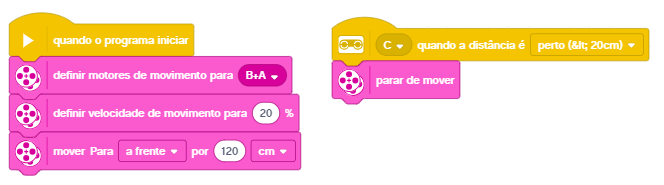
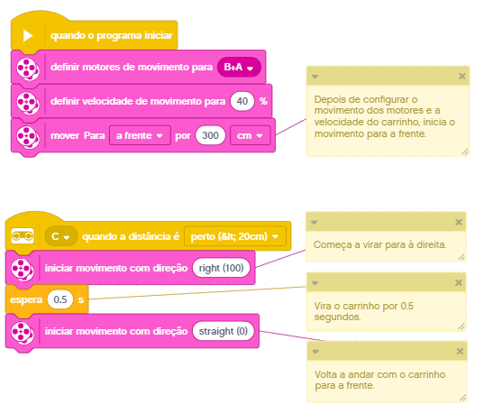

Materiais
Lista do que você precisa.
- LEGO® Education SPIKE® Prime
- Computador com o SPIKE App instalado.


Veículo base
Como montar a versão base do carrinho.
1 CONSTRUIR
Montagem do veículo base
Nesta etapa você vai utilizar o kit LEGO® para montar o veículo. A imagem abaixo indica as peças que você vai precisar. Verifique se o seu kit possui todas as peças.
Para que você possa ter uma ideia do resultado final da
montagem, confira a seguir o respectivo modelo 3D.

O passo a passo da montagem está disponível nos links abaixo.
A opção PDF é recomendada para quem deseja imprimir o roteiro de montagem.
O passo a passo 3D é para acessar a versão digital do processo de montagem.
Esta opção não é recomendada para quem está acessando este roteiro em um celular.
 Arquivo PDF: Ideal para impressão.
Arquivo PDF: Ideal para impressão.
 Passo a passo 3D: Ideal para uso
online.
Passo a passo 3D: Ideal para uso
online.
2 CONECTAR
Conexão dos cabos no Spike HUB
O cabo dos motores devem ser conectados nas portas A e B do Spike Hub.

O cabo do sensor de proximidade deve ser conectado nas porta C do Spike Hub.

3 PROGRAMAR
Movimentando o carrinho para frente
Linguagem de blocos no SPIKE app.
Agora está na hora de dar "vida" ao nosso veículo. 😜 Começaremos com a movimentação do carrinho para frente. O sensor de distância será usado para parar automaticamente o carrinho. Veja na imagem abaixo o conjunto de blocos para controlar esta movimentação.
Os blocos acima você econtra nos grupos EVENTOS e MOVIMENTO.
EVENTOS-
quando o programa iniciar -
(C) quando a distância é [perto (< 20cm))]
-
definir motores de movimento para (B+A) -
definir velocidade de movimento para (20) % -
mover Para [a frente] por (120) [cm] -
parar de mover
Se você ainda não é um expert LEGO® maker 😎, então confira as dicas que selecionamos para que você possa concluir a etapa de programação.
4 TESTAR
Verificando se o carrinho está funcionando
Finalmente vamos ver se o carrinho vai funcionar como esperado, ou seja, mover-se 120cm para frente e, caso encontre um obstáculo, parar automaticamente. Então, está na hora de transferir o programa para o HUB para ver o que acontece 😜.

Se você ainda não é um expert LEGO® maker 😎, então confira as dicas que selecionamos para que você possa testar o carrinho que acabou de construir.
Se ao testar o carrinho ele parecer não "identificar" o obstáculo, ou seja, seguir em frente e "bater", confira se o bloco de programação
Se mesmo com o bloco indicando que o carrinho deve mover PARA FRENTE ele andar para TRÁS, experimente alterar o bloco
Carrinho bate e volta
Virando para à direita quando encontrar um obstáculo.
1 CONSTRUIR
Montagem do veículo base
Nesta atividade utilizaremos o mesmo veículo base construído na atividade descrita acima. 👆
2 PROGRAMAR
Bate e vira à direita
Linguagem de blocos no SPIKE app.
Para onde o carrinho vai? 🤔
Precisamos controlar a direção do nosso veículo quando ele identificar um obstáculo!
Para isso, temos o bloco de programação
Dá uma conferida no programa completo abaixo. Leia também os respectivos comentários, ok?
Os blocos acima você econtra nos grupos EVENTOS, MOVIMENTO e CONTROLE.
EVENTOS-
quando o programa iniciar -
(C) quando a distância é [perto (<20cm)]
-
definir motores de movimento para (B+A) -
definir velocidade de movimento para (40) % -
mover Para [a frente] por (300) [cm] -
iniciar movimento com direção
-
espera (0.5) s
3 TESTAR
Verificando se o carrinho está funcionando
Finalmente vamos ver se o carrinho vai funcionar como esperado, ou seja, mover-se para frente e, quando encontrar um obstáculo, virar para à direita e seguir em frente. Então, está na hora de transferir o programa para o HUB para ver o que acontece 😜.

{kind=link}